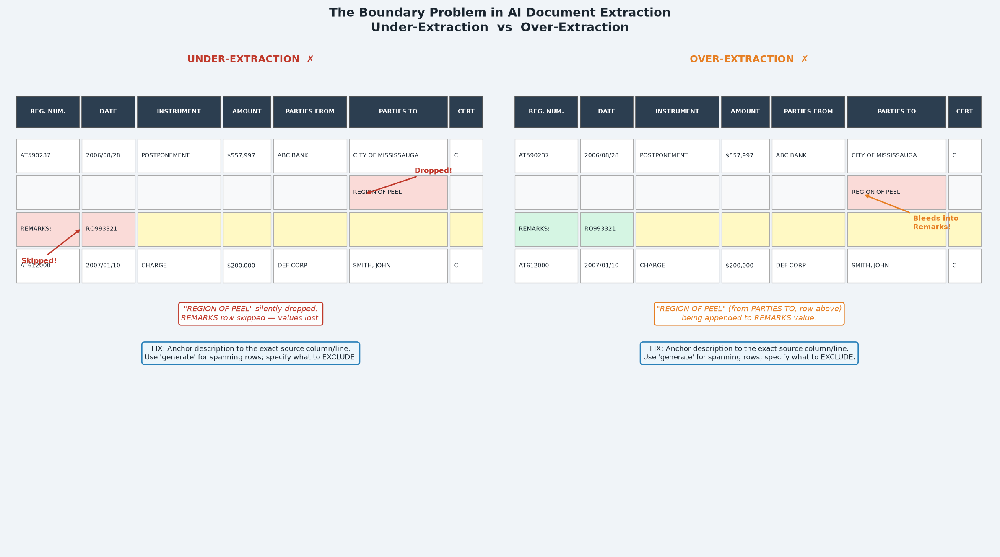

Series: Azure Content Understanding — Field Schema Design
- Part 1:
extractvsgenerate— choosing the right method - Part 2: Writing Deterministic Field Descriptions
- Part 3 (this article): The Boundary Problem — Too Much or Too Little
The Problem
A team built a schema to extract data from a structured document table. The Remarks field was the last thing they added — it seemed simple: find the REMARKS row beneath each instrument, return the text.
Then testing began.
Run 1: A remarks row containing plain text — "PLANNING ACT CONSENT ATTACHED" — was captured correctly.
Run 2: A remarks row containing a registration number — "RO993321" — was skipped entirely. Zero. Empty string.
Run 3: After fixing the skipping issue, a party name from a completely different row — "THE REGIONAL MUNICIPALITY OF PEEL" — began appearing inside the remarks value.
The same field. Three different failure modes. All caused by the same root issue: the model did not have a precise enough boundary definition for what belonged inside the field and what did not.
This is the boundary problem.
What Is the Boundary Problem?
In structured document extraction, a boundary defines:
- Where a field's value starts and ends horizontally (which columns)
- Where it starts and ends vertically (which rows)
- What neighbouring content is in scope versus out of scope
When a field description is ambiguous about any of these, one of two failures occurs:
| Failure Mode | What Happens | Symptom |
|---|---|---|
| Under-extraction | The model stops before the boundary — it drops content that should be captured | Empty strings, truncated values, silently missing data |
| Over-extraction | The model goes past the boundary — it pulls in content from adjacent rows or columns | Contaminated values, party names inside remarks, header text inside amounts |
Visual: Under-Extraction vs Over-Extraction

The diagram above shows a document table with two adjacent instruments. The left panel shows under-extraction: a second party line and a remarks row are silently dropped. The right panel shows over-extraction: a party name from an adjacent row bleeds into the Remarks field value.
Case Study: The Remarks Field Boundary
Step 1 — Initial state (under-extraction)
The schema had:
"Remarks": {
"type": "string",
"method": "extract",
"description": "Remarks associated to the specific instrument type.
This begins with 'REMARKS' and will be an additional row in the
document's table."
}Failure mode: Under-extraction. Remarks rows containing embedded registration numbers (e.g. REMARKS: RO993321) were silently dropped. The model interpreted the registration number as a new instrument row anchor, so it stopped the remark capture and started a new (phantom) row.
Root cause: The description said what a remarks row is but gave no rule about what should happen when the remarks text looks like something else (a registration number in this case).
Fix 1 — Added inclusion rule:
"description": "...A remarks row often contains one or more registration
numbers as part of its text (e.g. 'REMARKS: RO993321', 'REMARKS: PR590237
TO PR1011304 ADDED ... DELETED BY ...'). These registration numbers are
part of the remark and do NOT start a new instrument row — still capture
the entire remark line and never skip it..."Step 2 — After fix 1 (over-extraction)
After fixing the under-extraction, a new failure appeared. The Remarks field was now capturing a party name from the previous instrument's PARTIES TO column:
"DELETED BY J. SMITH ON 2007/12/11 THE REGIONAL MUNICIPALITY OF PEEL"
The party name was on a separate line in the PARTIES TO column, visually adjacent to the remarks row. With method: generate and a description focused on "read left to right to the end of the line," the model was stitching together text from the remarks line and the party entry that appeared nearby.
Root cause: The description said to read the full line but did not define what "line" meant in terms of column scope, and did not name the PARTIES TO column as out-of-scope.
Fix 2 — Added exclusion rule:
"description": "...The remark NEVER includes party or owner names
(such as a corporation or municipality name like 'THE REGIONAL MUNICIPALITY
OF PEEL' or 'THE CORPORATION OF THE CITY OF ACTON'); those belong to a
PARTIES column on a different line and must be excluded..."Step 3 — After fix 2 (clarifying horizontal scope)
An additional clarification was needed to make the horizontal scope explicit: the remarks line spans the full width of the table left to right — it is not limited to the left columns. This needed to be stated so the model would capture the complete remark text, not just the left portion.
Final description:
"Remarks": {
"type": "string",
"method": "generate",
"description": "The remark for this instrument. A remark is the line
that begins with the word 'REMARKS:' positioned directly beneath this
instrument's row (same REG. NUM.). Return the complete text of that one
line, reading left to right to the end of the line, joining words that
are separated by column gaps into a single string. Include any
registration numbers that appear in the remark text. The remark NEVER
includes party or owner names (such as a corporation or municipality
name like 'THE REGIONAL MUNICIPALITY OF PEEL'); those belong to a
PARTIES column on a different line and must be excluded. Do not include
text from any line above or below the REMARKS line. Return an empty
string if this instrument has no REMARKS line.",
"estimateSourceAndConfidence": true
}The Iteration Pattern
The boundary problem rarely resolves in a single step. The typical pattern is:
↓
Add inclusion rule → fix under-extraction
↓
Over-extraction discovered
↓
Add exclusion rule → fix over-extraction
↓
Scope ambiguity discovered
↓
Clarify horizontal/vertical extent → stable
How to Diagnose Which Failure You Have
| Observation | Likely failure |
|---|---|
| Field is empty on some documents, populated on others with identical structure | Under-extraction from an ambiguous anchor |
| Field is empty when the value contains a number, ID, or code | Under-extraction because the value "looks like" something else |
| Field contains text from a different row above or below | Over-extraction — vertical boundary not defined |
| Field contains text from an adjacent column | Over-extraction — horizontal boundary not defined |
| Field contains the correct value plus extra text after it | Over-extraction — end boundary not defined |
| Field value appears in two fields simultaneously | Both fields have overlapping scope; add exclusion to one |
Boundary Design Checklist
For any field that extracts from a structured table or form, define:
- Row anchor: Which row? (e.g. "the row directly beneath", "the same row as REG. NUM. X")
- Column scope: Which columns are in scope? (e.g. "taken only from the AMOUNT column", "spans the full width")
- Termination: Where does the value end? (e.g. "one line only", "until the next REG. NUM. row begins")
- Named inclusions: Content that looks out-of-scope but must be included (e.g. "include registration numbers that appear in the remark text")
- Named exclusions: Nearby content that must be excluded (e.g. "do NOT include party names from the PARTIES TO column")
- Null case: What to return when nothing is found (e.g. "return an empty string")
Key Takeaways
- The boundary problem is not a model failure — it is a description failure. The model extracts what the description permits.
- Under-extraction is caused by the model stopping too early because an edge-case value matches something out-of-scope.
- Over-extraction is caused by the model reaching too far because the boundary was never defined.
- Use named examples of what to include AND exclude — abstract rules ("don't include unrelated text") are insufficient.
- Expect two to three description iterations per complex field. Each iteration resolves one failure mode and may reveal another.
"estimateSourceAndConfidence": trueongeneratefields gives you visibility into extraction confidence, which helps identify which fields are most at risk during testing.
You've completed the series
- Part 1:
extractvsgenerate— choosing the right method - Part 2: Writing Deterministic Field Descriptions
- Part 3 (this article): The Boundary Problem — Too Much or Too Little